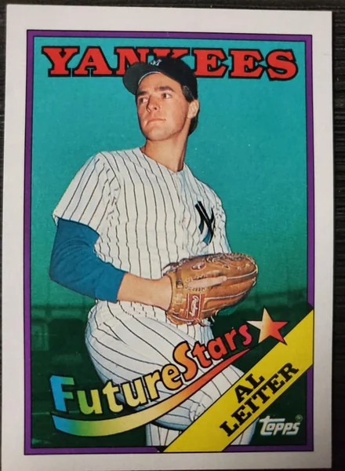

Al Leiter
Career Highlights & Facts
(Facts are AI-generated and may require verification)
- Threw 2 consecutive no-hitters during a high school career.
- Became the 1st pitcher in history to record a win against all 30 major league clubs.
- Received the Roberto Clemente Award for extensive community service and philanthropic work.
Would you like to find out more about Al Leiter?
Player Biography
Al Leiter February 8, 2017 / in BioProject - Person 1990s All-Stars , 2000s All-Stars Broadcasters 1992 Toronto Blue Jays / by admin This article was written by Thomas J. Brown Jr. Al Leiter spent 18 years in the majors and enjoyed pitching success in both leagues. During his career, he managed to earn two World Series rings and play on three different teams in the fall classic. Although Leiter never became one of the star pitchers of his day, he made important contributions to his teams’ success throughout his career. Leiter is also an excellent example of how a player can make significant contributions to the game both on and off the field. Leiter’s charity works as well as his second career as a television commentator have earned him many awards well beyond his playing days. Alois Terry Leiter was born on October 23, 1965 in Toms River, New Jersey. Leiter’s parents were Alexander and Marie Leiter. His father was a merchant seaman who met Leiter’s mother in Liverpool, England during his travels. Both of his parents lost their own mothers at an early age. This deeply affected Leiter’s father who in many ways never got over this loss. As a result, Leiter and his father were never close. His parents divorced when Leiter was 14; his later comment about it was, “Frankly, it was a relief.” Leiter never made up with his father and in many ways came to regret it; he found out after his father passed away that he had been coming to see him play without telling him. 1 Leiter grew up in a large family. Besides his parents, he had five brothers and two sisters. Every brother played baseball at some point although only two of them, Kurt and Mark, had any success at the game. Kurt pitched for a few years in the Orioles organization. Mark, like Leiter, became a Yankees prospect when he was in high school. Mark eventually spent 11 years in the major leagues pitching for the Yankees, Tigers, Giants, Expos, Phillies, Angels, and Mariners. Leiter grew up in Bayville, New Jersey and attended Central Regional High School. He drew the attention of major league scouts during his high school career. He became a baseball All-American in his senior year. His most significant high school pitching triumph also came that year. He threw two consecutive no-hitters and followed that up by striking out 32 batters while pitching 13 innings on April 19, 1984. The latter was a game that he did not win. 2 This accomplishment earned him recognition in a Sports Illustrated “Faces in the Crowd” segment. 3 After graduating high school, the left-handed Leiter was drafted by the Yankees on June 23, 1984. He went in the second round as the 50th overall pick in the regular draft. Yankee scout Joe DiCarlo who had watched him play during his high school years, signed him. 4 “I want to be another Tom Seaver ,” Leiter said. “I really think I’m going to do it, too.” 5 Upon signing with the Yankees, Leiter was sent to the Oneonta Yankees of the New York-Penn League. During the half-season that he spent in Oneonta, Leiter compiled a 3-2 record with a 3.63 ERA. It was at this time that former Yankees’ great Ron Guidry taught Leiter how to throw the cutter that he used for rest of his career. 6 In 1985, he split time between the Oneonta team and the Fort Lauderdale Yankees. Leiter struggled when he was moved up to the Fort Lauderdale team. His ERA rose to 6.48 and he finished that season with a 1-6 record during his time in Florida. This inauspicious start earned him another stint with the Fort Lauderdale team in 1986. Leiter improved to 4-8 in his second season there and lowered his ERA to 4.05. He also struck out 101 batters in the 117 innings that he pitched. Leiter’s improved 1986 performance earned him a promotion to the AA Albany/Colonie Yankees in 1987. He pitched well during the first half of the season as he continued to lower his ERA to 3.35. The Yankees promoted him to AAA Columbus for the second part of that season. After his arrival in Columbus, Leiter struggled and saw his ERA rise as he faced better hitters at this more competitive level. But clearly the Yankees saw some promise in the young player; they brought him up to the majors in September of that year. Leiter made his major-league debut as the starting pitcher for the Yankees on September 15, 1987, earning the win in a Yankees 4–3 victory over the Milwaukee Brewers at Yankee Stadium. During this brief September stretch with the Yankees, Leiter pitched in four games and earned a 2-2 record. When the 1988 season began, Leiter returned to the Columbus Clippers. But his stay there was short-lived. He only pitched in four games for the Clippers before being called up to the majors for the rest of the season. Leiter was, however, soon bitten by the injury bug. He was struck by a line drive off the bat of the A’s Carney Lansford on the first pitch of a May game and left the game with a severely bruised left forearm. 7 Then he developed soreness in his left elbow, a blister on the middle finger of his left hand and eventually a strain below his left shoulder blade that kept him from pitching after September 16. 8 For the 1988 season, Leiter started only 14 games and ended up with a 4-4 record. The 1989 season was no more productive for Leiter. He continued to struggle with several different injuries that kept him from playing. In April, Leiter threw 163 pitches over the course of nine innings as Yankees manager Dallas Green decided to “stretch out” Leiter that night. In the third and fourth innings, Leiter struggled, walking five hitters and allowing four Twins runs. By the end of the fourth inning, he had thrown over 90 pitches. 9 Today, Leiter would likely have been pulled, but Green kept Leiter in the game. He ended up striking out 10 batters and walking nine before being removed in the top of the ninth inning. 10 Leiter’s struggles eventually led the Yankees to give up on him and on April 30, 1989, they traded him to the Toronto Blue Jays for Jesse Barfield . Leiter expressed disappointment with the trade saying, “There’s nothing that I would rather do than pull on pinstripes (tonight).” But he went on to say “I hope to go out and win 20 games and have a great career and it will be just another instance of where the Yankees gave up on a young guy.” 11 Leiter had arthroscopic surgery in September of that year to try to help him overcome his arm troubles. 12 He pitched in fewer than 20 innings with the Blue Jays from 1989–1992. Besides the arthroscopic surgery, he also suffered with a pinched nerve in his elbow, tendinitis, and eventually had a second arthroscopic surgery on his left shoulder. His statistics were not spectacular, notably his 5.17 ERA and 10 strikeouts in 15 2/3 innings pitched during those years. He also suffered blisters on his pitching hand but overcame them with a special liniment that he continued to use for the remainder of his career. Even with all of these problems, Leiter was still considered a promising prospect and 1993 became the breakout year in Leiter’s career. He pitched the entire season without any injuries. He appeared in 34 games and made 12 starts for the Blue Jays that season. He had a 4.11 ERA for the year with a 9-6 record. Leiter earned a lot of attention during the playoffs and World Series that year. He appeared in five postseason games and earned a win while pitching 2 2/3 innings in relief in Game One of the World Series. He also swatted a double in the 15-14 slugfest that was the fourth game. Toronto eventually won that game to claim their second straight world championship. Leiter continued to pitch effectively for the next two seasons. He became one of the Blue Jays’ regular starting pitchers during these years. His statistics improved each year. In 1995, he had the eighth-best ERA in the American League to go with 153 strikeouts. Leiter used these improvements as a selling point when he applied for free agency at the end of the 1995 season. The Florida Marlins signed Leiter as a free agent during the offseason. The Marlins had joined the National League in 1993 as an expansion team and were trying to become competitive under the leadership of manager Rene Lachemann . Leiter joined a pitching staff that included Kevin Brown and John Burkett . At his signing, Leiter said, “I feel real good about what I’ve been doing the last three or four years. I feel like I’m right on the verge.” 13 In his first Marlin season, Leiter put up some of the best numbers of his career. He had a 16-12 won-loss record and his ERA of 2.93 was the lowest of his career to that point. While his 119 walks led the National League, he was also seventh in strikeouts with 200. The 1996 season included several “firsts” for Leiter’s career. Leiter threw his only no-hitter for the Marlins against the Colorado Rockies on May 11, 1996. The 11-0 lopsided victory was also the first-ever no-hitter by a Marlins pitcher. “It was a feeling of jubilation,” he said after the game. “Jubilation and relief and exhaustion. The whole thing is incredible.” 14 Leiter was chosen to participate in the 1996 All-Star Game in Philadelphia, his first All-Star appearance.. He recorded the last out in the National League’s 6-0 victory when he got Dan Wilson to fly out to center field. Leiter continued his pitching success in 1997. He started 27 games and ended the season with an 11-9 record for the 92-70 Marlins. They made the playoffs for the first time in their existence and eventually reached the World Series. They won the championship in seven games against the Cleveland Indians. In the series, Leiter started Games Three and Seven. He did not earn a win in either game. He lasted 4 2/3 innings in Game Three, which the Marlins won 14-11. He did better in Game Seven when he pitched six innings and gave up the Indians only runs in the 3-2 Marlins victory. In a span of four years, Leiter had pitched for two World Series winners. In the following offseason, the Marlins cleaned house and traded away all of the team’s stars. Owner Wayne Huizenga dumped every one of his high-priced stars: Bobby Bonilla , Moises Alou , Gary Sheffield , Brown, and Leiter. Leiter was traded along with Ralph Milliard to the New York Mets for Rob Stratton, A.J. Burnett , and Jesus Sanchez on February 6, 1998. After getting rid of all of their star players, the Marlins lost 108 games in 1998. 15 Leiter wanted to stay in Florida since his wife, Lori, was from there but the Marlins had other plans. At the time of his trade, he said “Initially the whole shock of what was going on was bad. We were all upset. But it’s part of the game. The uncertainty of not knowing where I was going was the agonizing part of it. But I realized that no matter what uniform I’m in, I’ve got to be ready.” 16 His arrival in New York was a bit of a homecoming for him since he had grown up across the river in New Jersey. He made an immediate impact with the Mets who were becoming competitive once again under manager Bobby Valentine . In 1998, Leiter had a 17-6 record to go with a career-best ERA of 2.47. Leiter’s charity work also began to get noticed soon after his trade to the Mets. When Leiter signed a four-year, $32 million contract with the Mets after the 1998 season, he said that he would contribute $1 million over the life of the contract to Leiter’s Landing, a charity formed by Leiter and his wife Lori. 17 Leiter anchored a Mets pitching staff in 1999 that included Orel Hershiser , Kenny Rogers , and Rick Reed . He finished the season with a 13-12 record while accumulating 162 strikeouts. Leiter’s importance to the team really became evident in the one-game playoff at Cinergy Field in Cincinnati. Leiter pitched a two-hit complete game shutout to earn the win in the Mets’ 5–0 victory, which put the Mets in the playoffs for the first time in 11 seasons. “I just forget about everything. I forget about all the things that are negative and I try to concern myself with a positive mindset. I think about who I’m facing and I prepare myself for that, mentally and physically. I think about making a pitch. If you do that aggressively, one pitch after another, chances are you are going to pitch a very good ballgame,” Leiter said when asked about the win. 18 Leiter was recognized for his work outside of baseball in the fall of 1999 when he was given the Branch Rickeythward. This award is presented annually to a major-league player for his local community service. Leiter earned the award for his work with Leiter’s Landing Foundation. He and Lori used the foundation to raise funds for and awareness of children’s education, health, social, and community service issues, especially in the New York City area. 19 The Mets and Leiter continued to improve in 2000. Leiter posted more respectable statistics, finishing 16–8 with a 3.20 ERA while fanning 200 batters. He made the All-Star team again. He became the losing pitcher in that game after giving up a single to Derek Jeter in the fourth inning. Jeter’s hit scored two runs to give the American League a lead that they did not relinquish. But this disappointment was a minor blip on a successful season for Leiter. The Mets made the playoffs again in 2000. Leiter pitched two solid games during the playoffs. He pitched eight innings but without a decision against the Giants in the NL Divisional Series and then he pitched another seven innings, again without a decision, against the St. Louis Cardinals in the NL Championship Series. The Mets reached the World Series for the first time since 1986. Leiter was on his third different World Series team. This was the 2000 “Subway Series” against the Yankees and Leiter started the first and fifth games. Leiter finished with a 2.87 ERA and had 16 strikeouts in 15 2⁄3 innings but the Mets lost both games that he started. They eventually lost the World Series to the Yankees in five games. His best performance in the series was Game Five when he pitched eight solid innings despite losing the game when he struggled in the ninth. “Al Leiter got into some kind of a zone and he was blowing people away. It was a great effort,” said Yankee outfielder Bernie Williams who managed to get a home run off him in the game. 20 At the end of the 2000 season, Leiter was honored again for his community work, this time receiving the Roberto Clemente Award. This award is arguably baseball’s most important non-playing award. It goes to a player who combines good play on the field with strong work in his community. Although Leiter was primarily honored for his continuing work with Leiter’s Landing, he also took other philanthropic actions that received notice. He gave his royalty from Microsoft’s placement of his image on the cover of its computer baseball game to his charity. Leiter arranged for Microsoft to donate 25 computers to needy New York City schools. Additionally, Leiter gave the stipend that he received for his work with fashion design house Hugo Boss to a group that was feeding the elderly in Queens during the holidays. He also established a scholarship fund for the high school students who volunteered in that program. 21 Over the next three seasons, Leiter continued to be a vital part of the Mets pitching staff. In 2002, he became the first pitcher in history to notch a win against all 30 major-league teams. He did it by pitching seven solid innings against the Arizona Diamondbacks and earning the win in a 6-1 Mets victory. Astonishingly, Leiter had won at least one game against 29 of the 30 major-league teams in the process of earning his first 69 victories. It took him another four years and 51 wins to finally beat the 30th and final team. 22 During these three seasons, 2001-2003, Leiter averaged 30 starts and pitched well, maintaining a 3.50 ERA. But he didn’t have the same success that he had during the Mets playoff runs. By the end of the 2004 season, he ranked high on several Mets all-time lists; he was sixth in wins with 95 and seventh in strikeouts with 1106 at the end of the 2004 season. Unfortunately, the Mets chose not to reward his efforts. In the offseason, the team declined Leiter’s $10 million option for 2005. This made him a free agent. Nevertheless, hoping to pitch one more year and finish his career in New York, Leiter tried to negotiate a new deal with Omar Minaya, the Mets general manager. 23 But he was rebuffed and, disappointed with the Mets management, left New York. Leiter decided to return to Florida where he had his original success as a pitcher. His former team, the Marlins, signed him to a one-year, $8 million contract on December 8, 2004. Marlins general manager Larry Beinfest said that the team was excited to have Leiter return. “This thing has a good feel to it, right from the start. We really wanted Al.” 24 Leiter did not pitch well after returning to the Marlins. He walked more batters and gave up more hits than he had in the past. By midseason, he had made 16 starts and finished with a 3–7 record. He took much of the criticism for the Marlins’ first-half struggles that year. At one point in late June he was even demoted to the bullpen but later returned to the rotation after an injury to Josh Beckett . Due to his lackluster performance in the first half of the 2005 season, the Marlins designated Leiter for assignment. 25 The next day, he was acquired by the Yankees for a player to be named later. “When you think this is where I started in ’87, and then 21 years ago when I was drafted by the Yankees, to come full circle like this, it’s very exciting,” he said at his signing. 26 His first start as a Yankee since 1989 came on July 17, 2005. Leiter pitched against the division-leading Boston Red Sox and won the game. He pitched 6 1⁄3 innings, allowing one run and three hits while striking out eight. But after this initial strong performance, he had mixed success on the mound and eventually he was assigned to the Yankees bullpen. Leiter’s last major-league appearance came on October 2, 2005. He pitched the final two-thirds of the ninth inning in a 10-1 Red Sox win on the final day of the season. The Yankees granted Leiter his free agent status on November 4, 2005. On January 6, 2006, Leiter signed as a free agent with the Yankees but indicated his desire to retire after the World Baseball Classic in March. 27 Leiter never pitched in a game for the U.S. team and officially retired from baseball on March 19, 2006. When he announced his retirement, Leiter said that he didn’t want to be a hanger-on. “I love the game but when you’ve been a front-end starter that’s the way you think of yourself. I think I can still get people out but my body tells me differently. 28 While Leiter did not garner any major pitching awards during his 19-year career, he was a member of two World Series championship teams, the 1993 Blue Jays and 1997 Marlins. He also played in the World Series for the 2000 Mets. Long before Leiter left baseball, he had started his second career as a commentator when he worked with ESPN as a studio analyst during their post season broadcasts in 1998 and 1999. He moved out of the studio and began to work in the television broadcast booth for the Fox MLB broadcasts during the 2003 NLCS and 2004 ALCS series. He provided in-depth analysis of the various pitchers. Since 2006, Leiter has worked as a color commentator and a studio analyst for the YES Network that covers the Yankees. 29 Leiter won a New York Emmy in 2007 for his work on the “Manny game” in Boston. The game, which took place on May 24, 2006, culminated in a Yankees victory when they overcame two home runs by Manny Ramirez to win 8-6. The Yankees were first down 2-0 and then 5-4 but ended up scoring four runs in the fifth inning to take the lead for good. 30 In 2009, Leiter was hired by MLB Network and appeared on the very first show they produced on January 1, 2009. He became a studio analyst for the MLB Network while continuing to work for the YES Network. In 2009, 2011, 2013, and 2015, Leiter was nominated for a National Sports Emmy Award for Best Studio Analyst. In 2012, 2014, and 2016, he won Sports Emmy awards for Outstanding Studio Show-Daily as an MLB Tonight Segment Producer. Leiter also started working as a color commentator for the Miami Marlins on Fox Sports Florida in 2016. 31 As of 2021, Leiter continues to work for MLB network as a studio analyst. In September 2021, MLB Network announced that Leiter and John Smoltz would only work remotely for the network due to their refusal to get the coronavirus vaccine. 32 Leiter’s post-baseball career keeps him extremely busy. He has appeared on a variety of shows and he regularly appears on Hot Stove , Diamond Demo , and Path to the Pennant along with other special events coverage. He also continues to work in his community in a variety of ways. Over the years, Leiter’s work has earned him numerous accolades such as the Good Guy Award from the New York Press Photographers Association in 2000. He was appointed to the board of directors of the Twin Towers Fund by Mayor Rudy Giuliani after 9/11 and played an important role in helping to allocate more than $280 million in donations. 33 Bud Selig picked him to serve on the Commissioner’s Initiative to evaluate baseball heading into the twenty-first century. Mayor Michael Bloomberg put him on the board of NYC & Company, the city’s tourism agency. 34 Leiter was mentioned as a possibility to succeed Senator Frank Lautenberg (D-NJ) after the senator’s death in 2013. Although he had never served in public office, he had worked for New Jersey Governor Chris Christie’s transition team after Christie’s election and served on the New Jersey Sports, Gaming and Entertainment Committee. “Who wouldn’t be interested if the governor of your state for whatever reason of their due process thought [you were] worthy, in their opinion?,” he said at the time. “So, yeah, I would be interested.” 35 Leiter returned to baseball in 2019 in a front office role. He became baseball operations advisor and will focus on scouting and player development at every level of the Mets organization. His work with players will emphasize mental preparation for pitchers. “I am thrilled to be reunited with the Mets organization, which I hold so near and dear to my heart,” he said. “I grew up a fan of the team and then was fortunate enough to realize my childhood dream of pitching for the Mets. Now, thanks to the Wilpon family and to Brodie, I couldn’t be more appreciative or more excited.” 36 Leiter and his wife, Lori, who is an attorney, continue to manage the Leiter’s Landing foundation as well as raise their three children in Summit, New Jersey. The children are Lindsay Brooke, Carly Jayne, and Jack Thomas. As of 2021, it appears that Jack is planning to follow in his father’s footsteps. With an 85-mph fastball, he has showed lots of promise as a member of his Delbarton High School team. 37 After graduating high school, he pitched on the Vanderbilt University team. As a sophomore, Jack went 11-4 with a 2.13 ERA and 179 strikeouts in 110 innings. The Texas Rangers chose him second in the 2021 amateur draft and he signed a contract with the team shortly after the draft. Although his playing days are over, Leiter continues to make contributions to baseball and his community in his own personal way. He may offer advice to young pitchers like the Marlins Adam Conley who said after meeting Leiter, “I was totally caught off guard. He just came right up and said, ‘Hey, I’m Al Leiter.’ I wasn’t expecting that at all. Didn’t even know that was him. He introduced himself and had a lot of good things to say about what he thought of my abilities and my stuff.” 38 Or he might spend time with military children such as when he went to McGuire Air Force Base and spoke to about 300 children of servicemen and women at a school just off the base. “I told the kids that because of my profession; sometimes people regard us as heroes. I just told them that in my mind, their mothers and fathers were the real heroes. We just play a simple game of baseball.” 39 Leiter’s exemplary career, both on and off the field, shows how baseball can be a springboard for even more important work when the player’s playing days come to a close. Last revised: December 14, 2021 Sources In addition to the sources cited in the Notes, the author also utilized the Baseball-Reference.com and Retrosheet.org websites for box scores, player, team, and season pages, pitching and batting game logs, and other material pertinent to this biography. Notes 1 Jill Leiber, “Mets’ Leiter delivers hope for others,” USA Today , August 28, 2002. 2 Randy Miller, “Reliving Al Leiter setting N.J. prep record with 32 Ks in 13 innings,” NJ.com , April 14, 2016. 3 “YES Announcers – Al Leiter, New York Yankees analyst,” YES Network.com , accessed September 20, 2016. 4 Mark Feinsand, “Baseball loses an unsung hero,” comment on Blogging the Bombers, New York Daily News.com , December 18, 2010. 5 “Central’s Leiter Will Sign,” Daily Register (Red Bank, New Jersey), June 22, 1984: 19. 6 http://mms.businesswire.com/bwapps/mediaserver/ViewMedia?mgid=80672&vid=1&download=1 , accessed September 21, 2016. 7 Michael Martinez, “What a Relief, Allen Goes 9,” New York Times , June 1, 1988. 8 http://mms.businesswire.com/bwapps/mediaserver/ViewMedia?mgid=80672&vid=1&download=1 , accessed September 21, 2016. 9 Mark Ferenchick, “Recounting the time Al Leiter threw 163 pitches in one game,” SB Nation.com , November 28, 2015 10 David Schoenfield, “The Pitchers Who Changed Baseball,” comment on Sweet Spot blog, ESPN.com , July 28, 2009. 11 Michael Kay, “Yanks Trade for Now,” New York Daily News , May 1, 1989: 42. 12 http://mms.businesswire.com/bwapps/mediaserver/ViewMedia?mgid=80672&vid=1&download=1 , accessed September 21, 2016. 13 Ed Price and Scott Tolley, “Leiter and Marlins A Nice Fit,” Palm Beach Post , December 15, 1995: 4D. 14 Greg Doyel, “No Runs, No Hits, One Hero,” Miami Herald , May 12, 1996: D1. 15 Rob Neyer, “A brief and unhappy history of fire sales,” SB Nation.com , accessed October 25, 2016. 16 Mike Phillips, “Marlins Trade Leiter to Mets,” Miami Herald , February 7, 1998: 2D. 17 Jill Leiber, “Mets’ Leiter delivers hope for others,” USA Today , August 28, 2002. 18 Mark Hermann, “Leiter Lights Way,” Newsday (New York), October 5, 1999: A72. 19 “Mets pitcher Al Leiter to dedicate Leiter’s Landing Playroom,” comment on Science Blog.com , February 2002. 20 Thomas Hill, “Yankees Reign,” New York Daily News , October 27, 2000: 2. 21 Rafael Hermoso, “Leiter’s Pitching Is Only Part of the Story,” New York Times , April 1, 2002. 22 Chris Jaffe, “10th anniversary: first man to beat 30 franchises,” The Hardball Times , accessed October 20, 2016. 23 Lee Jenkins, “Leiter Looks Back at the Mets and Feels a Sense of Betrayal,” New York Times , December 9, 2004. 24 Ronald Blum, “Marlins Sign Leiter,” Star Gazette (Elmira, New York), December 9, 2004: 5B. 25 Murray Chass, “Leiter Gets Save From Mets, and Another From the Yanks,” New York Times , July 19, 2005 26 Ken Davidoff, “Leiter Adds to Patchwork Staff,” Newsday (New York) , July 17, 2005: 74. 27 Barry Bloom, “Leiter likely to retire after Classic,” MLB.com , accessed October 2, 2016. 28 Bill Maddon, “With One Last Out, That’s It for Al,” New York Daily News , March 20, 2006: 54. 29 “YES Announcers – Al Leiter, New York Yankees analyst,” YES Network.com , accessed September 20, 2016. 30 Ben Masur, “Al Leiter: In The Booth, Politics, Charity & 3P Sports,” Diamond Nation magazine , Summer 2010. 31 Barry Jackson, “Miami Marlins hire Al Leiter, Eduardo Perez, Preston Wilson to share TV analyst duties,” Miami Herald , February 12, 2016. 32 Michael Shapiro, “John Smoltz, Al Leiter to Leave MLB Network Studios After COVID-19 Vaccine Refusal,” Sports Illustrated.com, September 1, 2021. https: 33 Ben Masur, “Al Leiter: In The Booth, Politics, Charity & 3P Sports,” Diamond Nation magazine , Summer 2010. 34 Lee Jenkins, “Leiter Lives a Life of Many Interests Outside Baseball,” New York Times , March 14, 2004. 35 Andrew Marchand, “Senator Leiter? Al Would Be Interested,” ESPN.com, June 4, 2013. https://www.espn.com/blog/new-york/yankees/post/_/id/56552/senator-leiter-al-would-be-interested 36 “Al Leiter Joins Mets as Baseball Operations Advisor,” MLB.com, March 4, 2019. https://www.mlb.com/press-release/al-leiter-joins-mets-as-advisor 37 Jeff Dahn, “Leiters light up Jr. National,” Perfect Game.org , accessed November 22, 2016. 38 Craig Davis, “Marlins’ Conley takes lesson from Leiter on pitching, talking good game,” South Florida Sun-Sentinel , April 14, 2016. 39 http://mms.businesswire.com/bwapps/mediaserver/ViewMedia?mgid=80672&vid=1&download=1 , accessed September 21, 2016. Full Name Alois Terry Leiter Born October 23, 1965 at Toms River, NJ (USA) Stats Baseball Reference Retrosheet If you can help us improve this player’s biography, contact us . Tags 1990s All-Stars · 2000s All-Stars · Broadcasters · 1992 Toronto Blue Jays Share this entry Share on Facebook Share on X Share on LinkedIn Share on Reddit Share by Mail
Career Totals
| WAR | W | L | ERA | G | GS | SV | IP | SO | WHIP |
|---|---|---|---|---|---|---|---|---|---|
| 40.0 | 162 | 132 | 3.80 | 419 | 382 | 2 | 2391.0 | 1974 | 1.386 |
Statistics via Baseball-Reference.com
The Original Clue